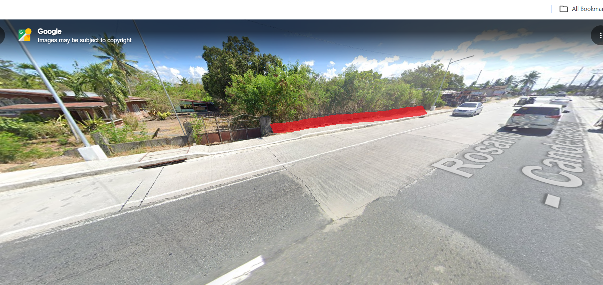
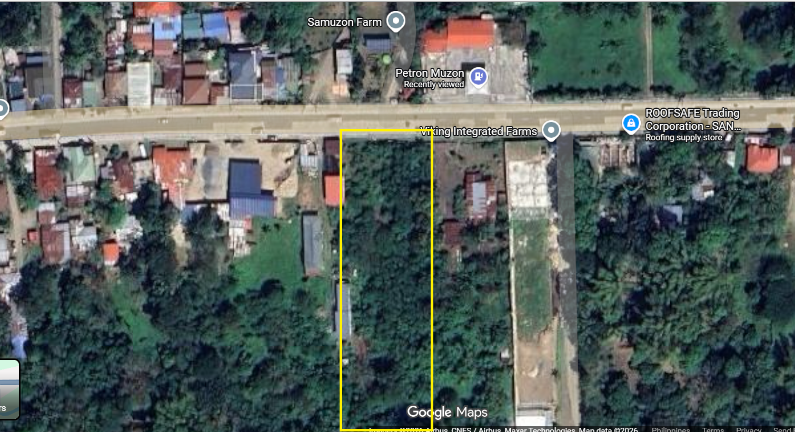
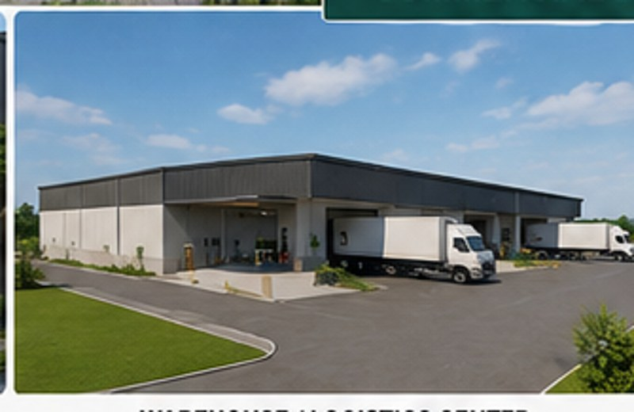

Real Location Images
Actual Property References



Located in Brgy. Muzon, San Juan, Batangas along Rosario–San Juan Road and directly across Petron Muzon.
Approximate total price: ₱11,750,000. Final terms subject to agreement and verification.


Realistic commercial-development visuals help buyers imagine the future use of the property.

Retail spaces, service businesses, and roadside commercial establishments.

Suitable for storage, logistics, light distribution, and business operations.

Ideal for restaurants, shops, service centers, or highway-facing businesses.

Combine commercial frontage with residential or rental spaces.
Possible rental development concept for long-term income potential.

Accessible to cars, trucks, and commercial traffic routes.
Positioned along Rosario–San Juan Road in Brgy. Muzon, San Juan, Batangas. The location gives strong visibility and convenient access for future commercial or residential development.
Yes, unless marked sold.
Brgy. Muzon, San Juan, Batangas, along Rosario–San Juan Road and directly across Petron Muzon.
4,700 SQM lot area.
₱2,500 per SQM, negotiable for serious buyers.
Mother Title, subdivided.
Yes, site viewing can be arranged by appointment.